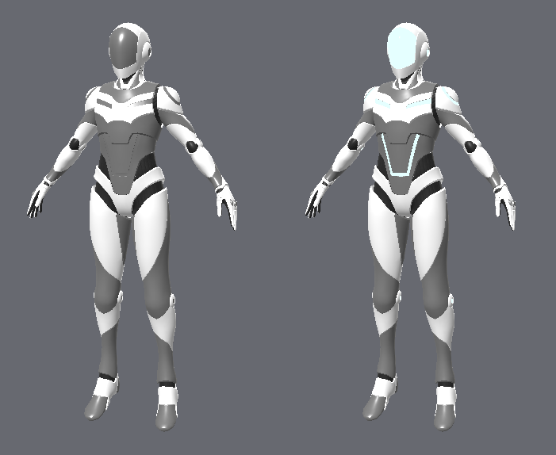
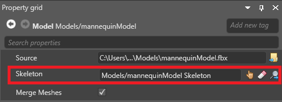

Material slots
Warning
Приносим свои извинения за неудобства. Для этой страницы нет перевода на русский язык. Она будет отображаться на английском языке.
Intermediate Artist Programmer
Models can use multiple materials. You can set the materials in the model's material slots.
For example, the second material slot in this model specifies the material for the visor and the shoulder and chest plate stripes. By changing the material in this slot, we change the material used in these parts of the model.

The material slots themselves — their number and position — are defined in the model source file (eg .fbx, .obj, etc). You can't edit material slots in Game Studio; you can only change which materials are used in each slot.
Set materials on a model
You can change the materials a model uses in two places:
Under the Materials properties of the model itself:
Note
This affects every instance of this model.
In the model component of an entity or prefab:

This only affects this instance or prefab.
Meshes and material slots
Models imported from modeling software can contain meshes. Meshes can share materials via material slots.

The association between a mesh and a material slot is defined in the model source file. You can't change these associations in Game Studio, but you can change them in code at runtime.
To change the association between a mesh and a material, use:
MyModelComponent.Model.Meshes[submeshIndex].MaterialIndex = materialIndex;
To change or add a material to the list of materials:
MyModelComponent.Materials[ExistingOrNewMaterialIndex] = myMaterial;
Merging meshes
When Stride draws a model with meshes, it performs one GPU draw call for each mesh. By default, to improve performance, at build time, Stride merges meshes that share materials.

In the example above, there are five meshes and five draw calls. After merging, there are three meshes and three draw calls.
Note
When Stride merges meshes, it merges the vertex and index buffers. This means you can't draw the meshes separately at runtime, and you can't change the original mesh position (transformation matrix). The meshes become a single mesh with a single material and a single transformation matrix (relative to the model).
Note
When Stride merges meshes, it changes the draw order of elements. In the case of transparent materials, this can produce different results.
Note
When you create a physics collider from a model, Stride builds separate convex hulls for each mesh in the model. If the meshes are merged, only one mesh remains per material, so convex hulls are also built from merged meshes.
Disable mesh merging
You might want to disable mesh merging if you want to:
animate a mesh
change the material of a mesh at runtime
To disable mesh merging on a model:
Select the model you want to disable mesh merging for.
In the Property Grid, disable Merge meshes.

Disable merging for specific meshes
To disable merging only for specific meshes, enable their corresponding nodes.
Select the model that contains the meshes.
In the Property Grid, under Skeleton, make sure the model has a skeleton associated with it.

For more information about skeletons, see Animation.
In the Asset View, select the skeleton.

In the Property Grid, under Nodes, select the nodes that correspond to the meshes you don't want to merge.
Tip
To see which nodes correspond to which mesh, open the model source file in a modeling application such as Maya.
Note
Make sure you don't disable nodes that are animated at runtime.